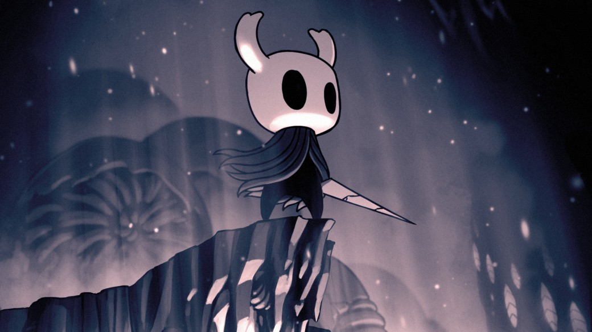

Aventurate en el extraño reino de Hallownest y descubre sus secretos al lado del misterioso caballero, un misterioso ser de extraña apariencia con un motivo desconocido, pero, cuidado con los spoilers, esta es una aventura que recomiendo vivir en carne propia 